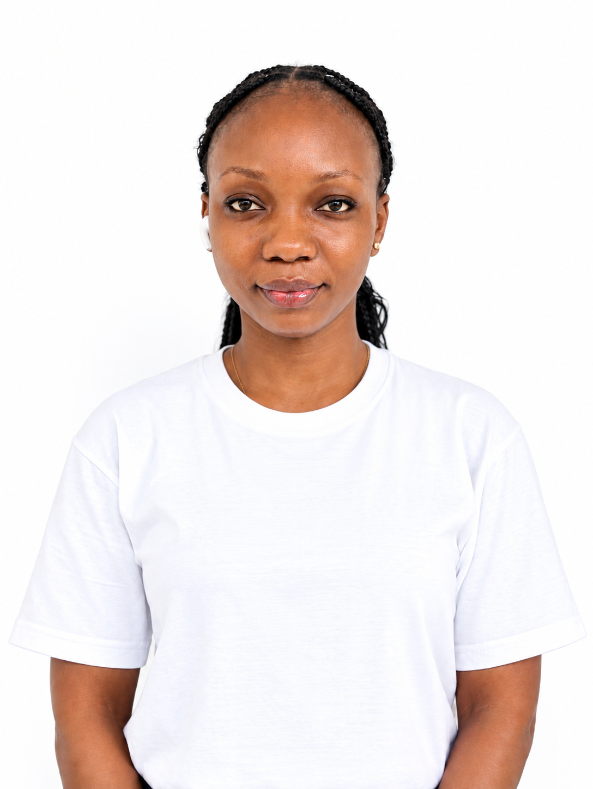
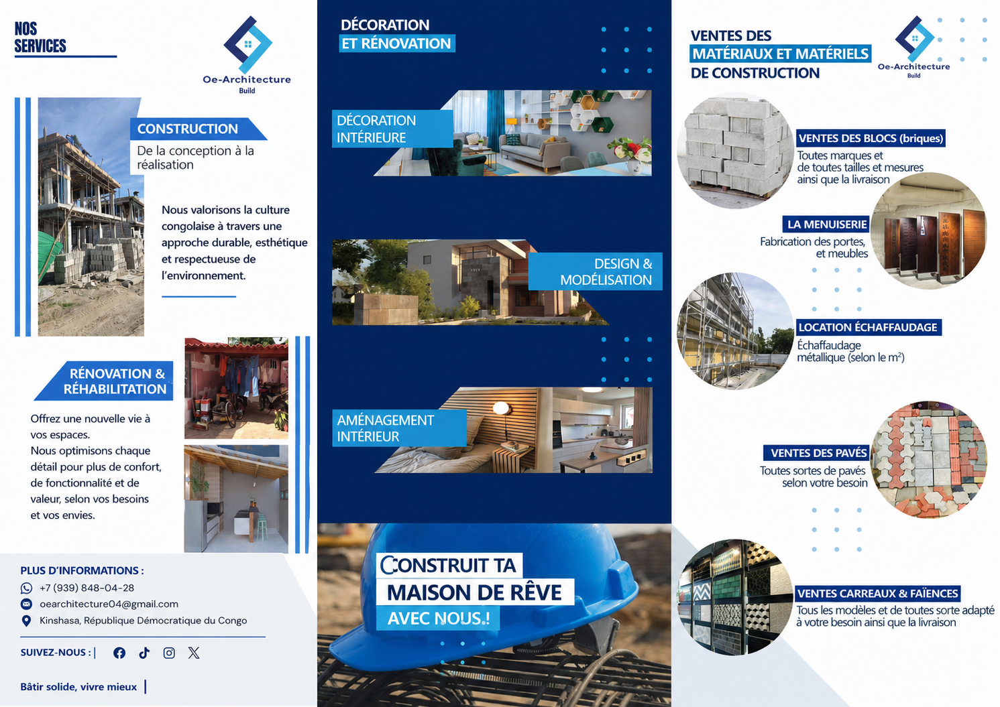
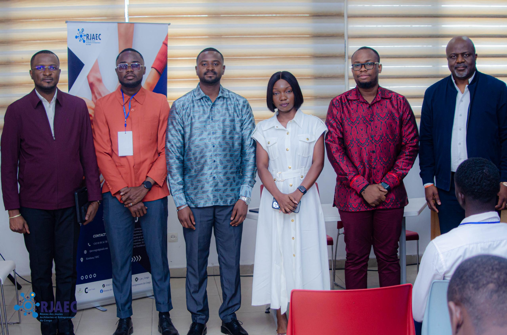

Identité
Une architecture qui puise dans notre patrimoine culturel et le projette vers l'avenir.
Kinshasa · République démocratique du Congo
Architecte & entrepreneure
Je bâtis une architecture qui valorise notre identité culturelle et répond aux réalités de nos communautés.

À propos
Contribuer au développement de mon territoire à travers l'architecture, l'innovation et l'entrepreneuriat — avec une vision où la créativité, le numérique et l'engagement des jeunes deviennent des leviers de transformation durable.
Fondatrice d'OE-Architecture et initiatrice du Réseau des Jeunes Architectes et Entrepreneurs du Congo (RJAEC), je m'investis dans la promotion d'une architecture ancrée dans notre culture et utile à nos communautés.
Formée à l'ISAU de Kinshasa, j'ai développé mes compétences en marketing numérique avec le programme D-CLIC de l'OIF, et je poursuis une spécialisation en marketing digital 360°. Membre du Conseil des jeunes de Social Impact Award et du programme YALI.
Une architecture qui puise dans notre patrimoine culturel et le projette vers l'avenir.
Des projets pensés pour les réalités, les usages et les besoins de nos communautés.
Collaboration, esprit d'initiative et mobilisation des jeunes pour transformer durablement.
Réalisations

OE-ARCHITECTURE est une entreprise congolaise spécialisée en architecture et construction. Elle accompagne vos projets de la conception à la réalisation, en alliant innovation, durabilité et identité culturelle.
Bâtir solide, vivre mieux.→
RJAECUn réseau pour fédérer, former et faire rayonner la jeune génération d'architectes et d'entrepreneurs.
Voir l'étude de cas →Ajoute ici un projet résidentiel, culturel ou communautaire avec photos, plans et rendus.
Voir l'étude de cas →Engagement auprès de jeunes porteurs de projets à impact social et entrepreneurial.
Voir l'étude de cas →Expertises
Du concept au dossier, une architecture contextuelle, culturelle et durable.
Création et pilotage de structures, stratégie et développement d'activité.
Marketing numérique 360° : visibilité, communication et image de marque.
Coordination, planification et suivi de projets marketing et de construction.
Mobilisation et structuration de réseaux de jeunes professionnels.
Engagement des jeunes comme leviers de transformation durable.
Parcours
Institut Supérieur d'Architecture et d'Urbanisme, Kinshasa.
Young African Leaders Initiative : leadership, business et entrepreneuriat.
Formation en marketing numérique — Organisation internationale de la Francophonie.
Création du cabinet et du réseau des jeunes architectes et entrepreneurs.
Spécialisation en stratégie digitale · Membre du Conseil des jeunes.
Contact
VOTRE-EMAIL@exemple.com · Kinshasa, RDC